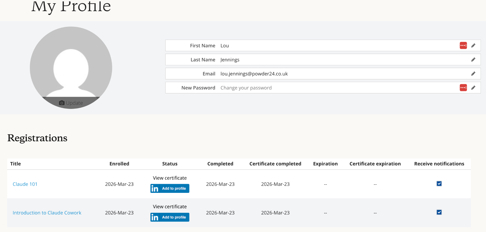

Your central resource for everything Claude — get set up, stay informed, and help shape how we work smarter.
Read through the essentials of how Claude works, which products and models to use, and sign to confirm you've understood.
Tell us which Claude integrations you've tried — helps the team understand where AI is making a difference.
Before uploading anything to Claude, run through this quick checklist to keep data safe and compliant.
Access the compulsory courses and other resources to build your Claude skills and earn certificates.
A structured overview of how Claude is set up, which products and models to use and when, and where to build your knowledge further. Items highlighted in green are governance points. Read through and sign at the bottom.
The more you collaborate and test, the more it makes sense and the better Claude can assist you.
Getting started with Claude in a structured way will save you a lot of time. This guide gives you a simple overview of how Claude is set up, which products and models to use and when, and where to go to build your knowledge further. It's not exhaustive — it's intentionally a starting point to act as a frame for you to explore from.
Items highlighted in green are governance points.
All 3 sync to each other when logged into your account.
Summary: use Desktop for everyday work, Mobile for quick questions when away from your desk.
Summary: use Chat for everyday tasks, Cowork for more complex projects.
Please read the "Use Cowork safely" articles here.
You select the model in the chat field via a simple dropdown.
We would like all Claude company users to do the following academy courses:
We suggest bookmarking the above 2 courses to refer back to. The hope is that once you've completed these courses, you'll be able to review task lists and understand how Claude can streamline how objectives are achieved.
Once you have completed the courses, you receive a certificate on your account:

The above guide should be read in parallel to Powder24's AI usage policy and parameters.
The Anthropic Academy is extensive. In addition to the above, you may find tutorials that focus on specific departments useful. See the section under "Ways to use Claude" here (for example, Claude for Marketing / Claude for Product Management).
The AI Fluency Framework course is also useful as a recap on how to best use AI platforms, both from an efficiency perspective and from an ethical and risk-aware level.
Chats can be linked into Projects or created within them.
Connectors allow Claude to link directly to external tools and platforms you already use — Google Drive, Slack, Notion, or calendars. Once connected, Claude can read from and in some cases interact with those tools.
For now, we are doing an audit of which connectors people have used before confirming what we are happy with. Please avoid connecting any more connectors until we have completed the audit or if you need something urgently, please ask LJ/TS. As a general principle, we should only connect tools that hold data you'd be comfortable with Claude having visibility of, and be clear on the set-up permissions when connecting the tool.
Once the connectors audit is complete, we will communicate settings that should be checked are in place. For each connector, it is vital that you check your settings match what we communicate exactly, even if the system allows you to do otherwise. In the interim, consider the settings of any connected apps — "read only" or "ask before acting" are typical instructions to opt for rather than allowing full access.
For the Claude desktop app, Claude operates locally — it saves files to your computer's file system. Whilst work is being generated and stored locally, we recommend:
For the Claude web interface, files behave differently. Files you upload are analysed but not saved locally by Claude. If Claude generates a document, you can "download" it to your computer's default downloads folder.
Ultimately we hope for Claude to be integrated fully with the P24 Drive, which will make this simpler — but for now, the above applies.
Last updated: 29 April 2026 — Tom & Lou, Powder24 AI Team
Before uploading anything to Claude, run through this checklist. This applies to any AI tool, but for the purpose of this communication, we are concentrating on Claude.
Alongside the general company AI usage policy, please use this checklist before uploading any data or documents to Claude:
If you're not sure whether something falls into the above categories, ask before uploading. The default position should be caution.
Tick the connectors you've used. You can only update your own row — this helps the team see where Claude is being put to work.
| Loading... |
Complete the two compulsory courses below, then explore further resources at your own pace.
Foundational knowledge — covers what Claude is, its features, and how to use it well. We recommend watching the Getting Started with Claude AI tutorial (5 mins) before beginning.
Take your usage up a notch — covers specific use cases, plug-ins, and agentic automation. Do this once Claude 101 feels comfortable.
Usage statistics and team activity — visible to Tom and Lou only.